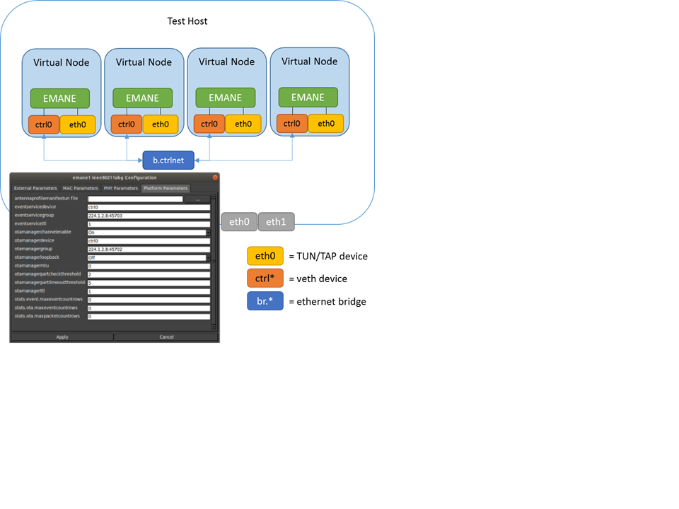
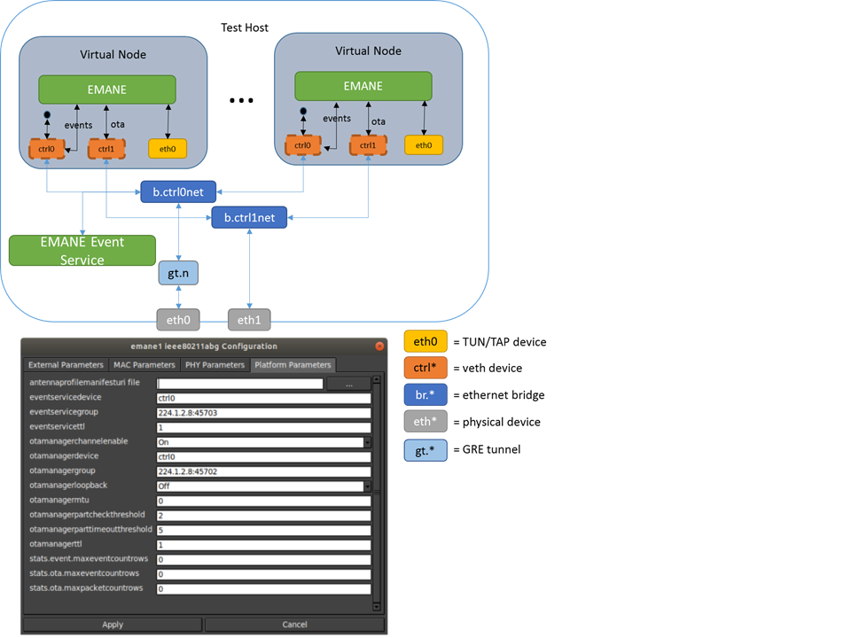

EMANE (Extendable Mobile Ad-hoc Network Emulator)
What is EMANE?
The Extendable Mobile Ad-hoc Network Emulator (EMANE) allows heterogeneous network emulation using a pluggable MAC and PHY layer architecture. The EMANE framework provides an implementation architecture for modeling different radio interface types in the form of Network Emulation Modules (NEMs) and incorporating these modules into a real-time emulation running in a distributed environment.
EMANE is developed by U.S. Naval Research Labs (NRL) Code 5522 and Adjacent Link LLC, who maintain these websites:
Instead of building Linux Ethernet bridging networks with CORE, higher-fidelity wireless networks can be emulated using EMANE bound to virtual devices. CORE emulates layers 3 and above (network, session, application) with its virtual network stacks and process space for protocols and applications, while EMANE emulates layers 1 and 2 (physical and data link) using its pluggable PHY and MAC models.
The interface between CORE and EMANE is a TAP device. CORE builds the virtual node using Linux network namespaces, installs the TAP device into the namespace and instantiates one EMANE process in the namespace. The EMANE process binds a user space socket to the TAP device for sending and receiving data from CORE.
An EMANE instance sends and receives OTA (Over-The-Air) traffic to and from other EMANE instances via a control port (e.g. ctrl0, ctrl1). It also sends and receives Events to and from the Event Service using the same or a different control port. EMANE models are configured through the GUI's configuration dialog. A corresponding EmaneModel Python class is sub-classed for each supported EMANE model, to provide configuration items and their mapping to XML files. This way new models can be easily supported. When CORE starts the emulation, it generates the appropriate XML files that specify the EMANE NEM configuration, and launches the EMANE daemons.
Some EMANE models support location information to determine when packets should be dropped. EMANE has an event system where location events are broadcast to all NEMs. CORE can generate these location events when nodes are moved on the canvas. The canvas size and scale dialog has controls for mapping the X,Y coordinate system to a latitude, longitude geographic system that EMANE uses. When specified in the core.conf configuration file, CORE can also subscribe to EMANE location events and move the nodes on the canvas as they are moved in the EMANE emulation. This would occur when an Emulation Script Generator, for example, is running a mobility script.
EMANE in CORE
This section will cover some high level topics and examples for running and using EMANE in CORE.
You can find more detailed tutorials and examples at the EMANE Tutorial.
Every topic below assumes CORE, EMANE, and OSPF MDR have been installed.
Info
Demo files will be found within the core-gui ~/.coregui/xmls directory
| Topic | Model | Description |
|---|---|---|
| XML Files | RF Pipe | Overview of generated XML files used to drive EMANE |
| GPSD | RF Pipe | Overview of running and integrating gpsd with EMANE |
| Precomputed | RF Pipe | Overview of using the precomputed propagation model |
| EEL | RF Pipe | Overview of using the Emulation Event Log (EEL) Generator |
| Antenna Profiles | RF Pipe | Overview of using antenna profiles in EMANE |
EMANE Configuration
The CORE configuration file /opt/core/etc/core.conf has options specific to EMANE. An example emane section from the core.conf file is shown below:
# EMANE configuration
emane_platform_port = 8101
emane_transform_port = 8201
emane_event_monitor = False
#emane_models_dir = /home/<user>/.coregui/custom_emane
# EMANE log level range [0,4] default: 2
emane_log_level = 2
emane_realtime = True
# prefix used for emane installation
# emane_prefix = /usr
If you have an EMANE event generator (e.g. mobility or pathloss scripts) and want to have CORE subscribe to EMANE location events, set the following line in the core.conf configuration file.
Note
Do not set this option to True if you want to manually drag nodes around on the canvas to update their location in EMANE.
emane_event_monitor = True
Another common issue is if installing EMANE from source, the default configure prefix will place the DTD files in /usr/local/share/emane/dtd while CORE expects them in /usr/share/emane/dtd.
Update the EMANE prefix configuration to resolve this problem.
emane_prefix = /usr/local
Custom EMANE Models
CORE supports custom developed EMANE models by way of dynamically loading user created python files that represent the model. Custom EMANE models should be placed within the path defined by emane_models_dir in the CORE configuration file. This path cannot end in /emane.
Here is an example model with documentation describing functionality:
"""
Example custom emane model.
"""
from pathlib import Path
from typing import Optional
from core.config import Configuration
from core.emane import emanemanifest, emanemodel
class ExampleModel(emanemodel.EmaneModel):
"""
Custom emane model.
:cvar name: defines the emane model name that will show up in the GUI
Mac Definition:
:cvar mac_library: defines that mac library that the model will reference
:cvar mac_xml: defines the mac manifest file that will be parsed to obtain configuration options,
that will be displayed within the GUI
:cvar mac_defaults: allows you to override options that are maintained within the manifest file above
:cvar mac_config: parses the manifest file and converts configurations into core supported formats
Phy Definition:
NOTE: phy configuration will default to the universal model as seen below and the below section does not
have to be included
:cvar phy_library: defines that phy library that the model will reference, used if you need to
provide a custom phy
:cvar phy_xml: defines the phy manifest file that will be parsed to obtain configuration options,
that will be displayed within the GUI
:cvar phy_defaults: allows you to override options that are maintained within the manifest file above
or for the default universal model
:cvar phy_config: parses the manifest file and converts configurations into core supported formats
Custom Override Options:
NOTE: these options default to what's seen below and do not have to be included
:cvar config_ignore: allows you to ignore options within phy/mac, used typically if you needed to add
a custom option for display within the gui
"""
name: str = "emane_example"
mac_library: str = "rfpipemaclayer"
mac_xml: str = "rfpipemaclayer.xml"
mac_defaults: dict[str, str] = {
"pcrcurveuri": "/usr/share/emane/xml/models/mac/rfpipe/rfpipepcr.xml"
}
mac_config: list[Configuration] = []
phy_library: Optional[str] = None
phy_xml: str = "emanephy.xml"
phy_defaults: dict[str, str] = {
"subid": "1",
"propagationmodel": "2ray",
"noisemode": "none",
}
phy_config: list[Configuration] = []
config_ignore: set[str] = set()
@classmethod
def load(cls, emane_prefix: Path) -> None:
"""
Called after being loaded within the EmaneManager. Provides configured
emane_prefix for parsing xml files.
:param emane_prefix: configured emane prefix path
:return: nothing
"""
cls._load_platform_config(emane_prefix)
manifest_path = "share/emane/manifest"
# load mac configuration
mac_xml_path = emane_prefix / manifest_path / cls.mac_xml
cls.mac_config = emanemanifest.parse(mac_xml_path, cls.mac_defaults)
# load phy configuration
phy_xml_path = emane_prefix / manifest_path / cls.phy_xml
cls.phy_config = emanemanifest.parse(phy_xml_path, cls.phy_defaults)
Single PC with EMANE
This section describes running CORE and EMANE on a single machine. This is the default mode of operation when building an EMANE network with CORE. The OTA manager and Event service interface are set to use ctrl0 and the virtual nodes use the primary control channel for communicating with one another. The primary control channel is automatically activated when a scenario involves EMANE. Using the primary control channel prevents your emulation session from sending multicast traffic on your local network and interfering with other EMANE users.
EMANE is configured through an EMANE node. Once a node is linked to an EMANE cloud, the radio interface on that node may also be configured separately (apart from the cloud.)
Right click on an EMANE node and select EMANE Config to open the configuration dialog. The EMANE models should be listed here for selection. (You may need to restart the CORE daemon if it was running prior to installing the EMANE Python bindings.)
When an EMANE model is selected, you can click on the models option button causing the GUI to query the CORE daemon for configuration items. Each model will have different parameters, refer to the EMANE documentation for an explanation of each item. The defaults values are presented in the dialog. Clicking Apply and Apply again will store the EMANE model selections.
The RF-PIPE and IEEE 802.11abg models use a Universal PHY that supports geographic location information for determining pathloss between nodes. A default latitude and longitude location is provided by CORE and this location-based pathloss is enabled by default; this is the pathloss mode setting for the Universal PHY. Moving a node on the canvas while the emulation is running generates location events for EMANE. To view or change the geographic location or scale of the canvas use the Canvas Size and Scale dialog available from the Canvas menu.
Note that conversion between geographic and Cartesian coordinate systems is done using UTM (Universal Transverse Mercator) projection, where different zones of 6 degree longitude bands are defined. The location events generated by CORE may become inaccurate near the zone boundaries for very large scenarios that span multiple UTM zones. It is recommended that EMANE location scripts be used to achieve geo-location accuracy in this situation.
Clicking the green Start button launches the emulation and causes TAP devices to be created in the virtual nodes that are linked to the EMANE WLAN. These devices appear with interface names such as eth0, eth1, etc. The EMANE processes should now be running in each namespace.
To view the configuration generated by CORE, look in the /tmp/pycore.nnnnn/ session directory to find the generated EMANE xml files. One easy way to view this information is by double-clicking one of the virtual nodes and listing the files in the shell.

Distributed EMANE
Running CORE and EMANE distributed among two or more emulation servers is similar to running on a single machine. There are a few key configuration items that need to be set in order to be successful, and those are outlined here.
It is a good idea to maintain separate networks for data (OTA) and control. The control network may be a shared laboratory network, for example, and you do not want multicast traffic on the data network to interfere with other EMANE users. Furthermore, control traffic could interfere with the OTA latency and throughput and might affect emulation fidelity. The examples described here will use eth0 as a control interface and eth1 as a data interface, although using separate interfaces is not strictly required. Note that these interface names refer to interfaces present on the host machine, not virtual interfaces within a node.
IMPORTANT: If an auxiliary control network is used, an interface on the host has to be assigned to that network.
Each machine that will act as an emulation server needs to have CORE distributed and EMANE installed. As well as be setup to work for CORE distributed mode.
The IP addresses of the available servers are configured from the CORE servers dialog box. The dialog shows available servers, some or all of which may be assigned to nodes on the canvas.
Nodes need to be assigned to servers and can be done so using the node configuration dialog. When a node is not assigned to any emulation server, it will be emulated locally.
Using the EMANE node configuration dialog. You can change the EMANE model being used, along with changing any configuration setting from their defaults.

Note
Here is a quick checklist for distributed emulation with EMANE.
- Follow the steps outlined for normal CORE.
- Assign nodes to desired servers
- Synchronize your machine's clocks prior to starting the emulation, using ntp or ptp. Some EMANE models are sensitive to timing.
- Press the Start button to launch the distributed emulation.
Now when the Start button is used to instantiate the emulation, the local CORE daemon will connect to other emulation servers that have been assigned to nodes. Each server will have its own session directory where the platform.xml file and other EMANE XML files are generated. The NEM IDs are automatically coordinated across servers so there is no overlap.
An Ethernet device is used for disseminating multicast EMANE events, as specified in the configure emane dialog. EMANE's Event Service can be run with mobility or pathloss scripts. If CORE is not subscribed to location events, it will generate them as nodes are moved on the canvas.
Double-clicking on a node during runtime will cause the GUI to attempt to SSH to the emulation server for that node and run an interactive shell. The public key SSH configuration should be tested with all emulation servers prior to starting the emulation.